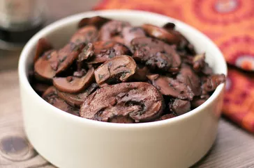

Garlic Mushroom
Ingredients
- 1 tablespoon butter
- 2 pounds sliced fresh mushrooms
- 4 cloves garlic, minced
- 1 teaspoon dried basil
- 1 cup red wine
- Step 1- Heat butter in a skillet over medium heat. Add mushrooms and garlic;
cook and stir until mushrooms are a light golden brown
and liquid has evaporated, about 10 minutes. Stir in basil.
- Step 2- Reduce heat to low, and pour wine into the skillet. Simmer until wine
has mostly evaporated. Serve immediately.